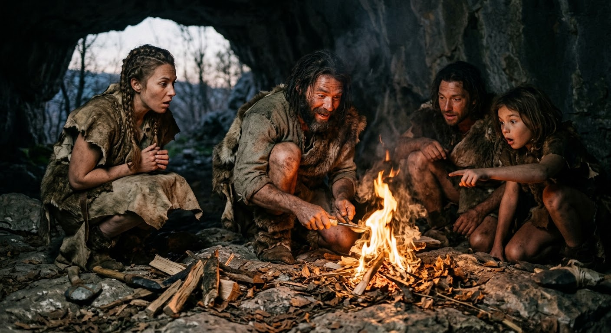
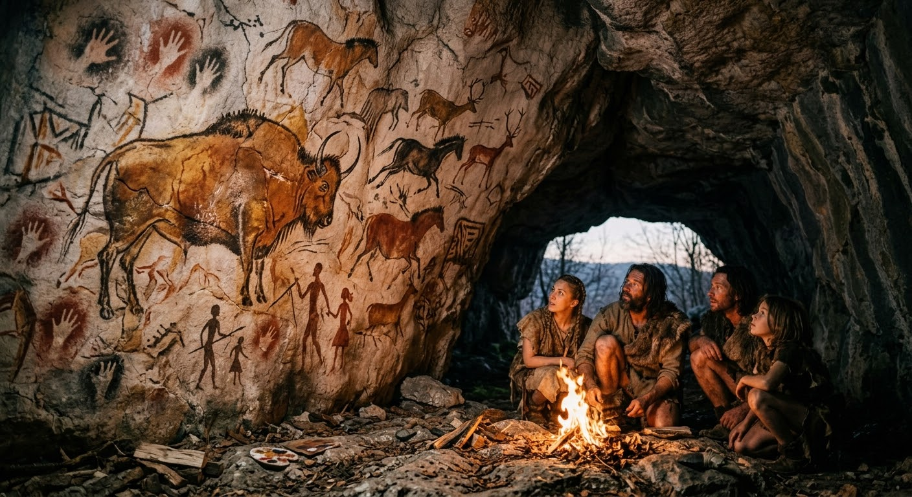
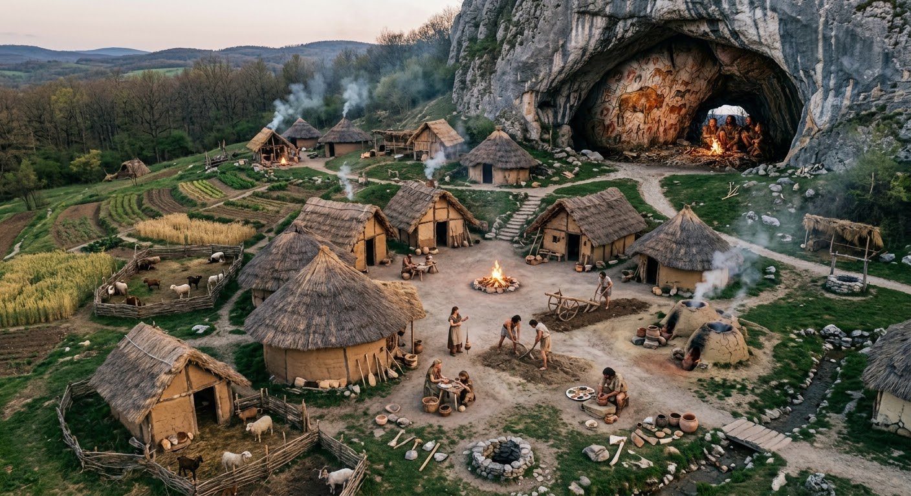

Pré-História: O Despertar da Humanidade
A Pré-História compreende o mais longo e misterioso período da nossa existência: desde os primeiros hominídeos que caminharam sobre a Terra até a invenção da escrita. Foi uma época de adaptação extrema, sobrevivência e descobertas revolucionárias.

Ilustração: O domínio do fogo foi um dos maiores marcos da evolução humana.A Divisão da Pré-História
Para facilitar o estudo, a Pré-História é dividida em três grandes fases baseadas nas ferramentas e na tecnologia desenvolvida por nossos ancestrais:
1. Período Paleolítico (Pedra Lascada)
O Paleolítico é o período mais longo da história humana. Durante essa fase, os grupos humanos eram estritamente **nômades** — deslocando-se constantemente em busca de alimentos, caça e abrigo.
- Caça e Coleta: A sobrevivência dependia da coleta de frutos, raízes e da caça de grandes animais.
- Ferramentas Primitivas: Utensílios feitos de osso, madeira e pedra lascada (como machados de mão e lanças).
- O Domínio do Fogo: Permitiu o aquecimento no frio, a proteção contra predadores e o cozimento dos alimentos.
- Arte Rupestre: Início das manifestações artísticas nas paredes das cavernas, retratando animais e rituais de caça.

Pinturas rupestres retratando a fauna da época e rituais de caça.2. Período Neolítico (Pedra Polida)
Por volta de 10.000 a.C., ocorreu uma das maiores transformações da humanidade: a **Revolução Agrícola**. Os seres humanos aprenderam a cultivar a terra e a domesticar animais.
- Sedentarização: Os grupos deixaram de ser nômades e passaram a construir as primeiras vilas e aldeias permanentes.
- Surgimento da Cerâmica e Tecelagem: Necessidade de armazenar grãos e criar vestimentas mais elaboradas.
- Pedra Polida: Ferramentas mais cegas e afiadas, como enxadas, machados e mós para moer grãos.

O surgimento das primeiras aldeias agrícolas no período Neolítico.3. Idade dos Metais
Com o desenvolvimento do domínio do fogo a altíssimas temperaturas, a humanidade aprendeu a fundir minérios. Essa fase marca a transição final da Pré-História para as primeiras grandes civilizações urbanas da história.
- Idade do Cobre: O primeiro metal a ser trabalhado para criar ferramentas simples e ornamentos.
- Idade do Bronze: A liga de cobre com estanho gerou um metal muito mais resistente, usado na fabricação de armas e armaduras.
- Idade do Ferro: Permitiu a produção em massa de ferramentas agrícolas e equipamentos militares de alta durabilidade.
Da Pré-História às Primeiras Civilizações
O crescimento das aldeias na Idade dos Metais levou ao surgimento das **primeiras cidades** ao longo de grandes rios (como o Tigre, o Eufrates e o Nilo). O comércio floresceu, a sociedade se tornou mais complexa e, por fim, com a invenção da escrita na Mesopotâmia, a humanidade entrou oficialmente na **Idade Antiga**.